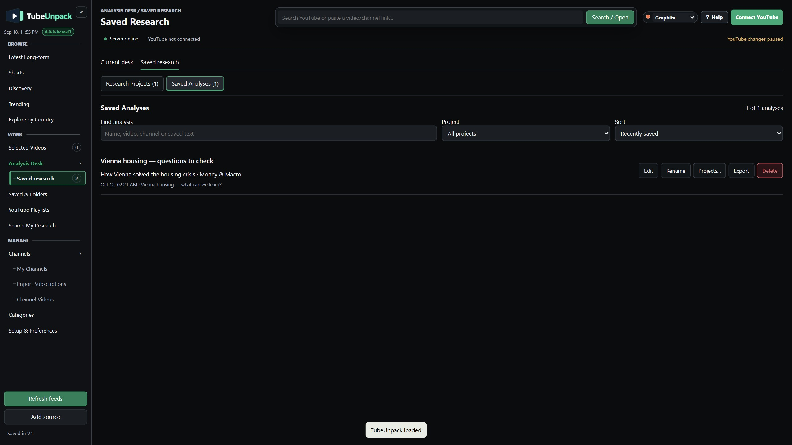

Three homes, three purposes
| I want to… | Use | What it keeps |
|---|---|---|
| Return to a video later | Saved & Folders | A local video reference and folder memberships. It does not change a YouTube playlist. |
| Investigate a question across sources | Saved Research → Research Projects | A named group of videos, questions and conclusions. |
| Keep a response I reviewed | Saved Research → Saved Analyses | The response you manually paste for a video, with its name and verification notes. |
A video can be saved in folders, included in projects and have a saved analysis. None is a requirement for the others.
Save videos without changing YouTube
Save to folders… lets you choose folders or create one immediately. Saving without a folder keeps the video in All saved. A video can belong to several local folders.
In Saved & Folders, add selected videos to folders or move their membership from the current folder. Dragging from All saved adds to a target; dragging from a folder moves that membership. The pencil renames a folder.
Undo reverses the most recent library action in the current session. These are local memberships, not copies of video files or offline downloads.
Build a project around a question
Add from where you are
Use Add to research… beside folder saving. Search an existing project or create a new one while adding. Batch Add selected to research… sits beside Send to Analysis Desk.
Gather more sources
Inside a project, Add videos… searches the local library and identifies videos already included. TubeUnpack tries to load missing captions; ready, loading and unavailable states are visible. Retry or paste a transcript when needed.
Work across the material
Keep the research question and conclusions with the group. Select sources for transcript/comparison exports, then use the manual assistant workflow. Project Rename and Delete are available on the list and inside the opened project.
Watch the actual beta.13 sequence: save, leave and reopen ↗
A result should not disappear with its desk
Saved Analyses is independent. A pasted response stays searchable even if its video is no longer on the Analysis Desk or in a Research Project.
Choose Save analysis result, paste your assistant's response—or write your own—give it a name and add verification sources/dates where useful. Project membership is optional. Only after the result is saved successfully does TubeUnpack offer View saved result.
In Saved Research → Saved Analyses, search by name, video, channel or saved text. Edit or rename, change project membership, export Markdown or separately delete the response.
One editable result per video
Saving again updates that video's existing response. It is not a version history. Export before replacing it if you want to preserve a separate copy.
In the workspace / A worked example
One question, two useful homes
Suppose a video about Vienna’s housing system raises a question you want to follow: “Which parts of this approach could apply elsewhere?” Keep the broader question in a project and keep the video-specific note in Saved Analyses.
These are genuine beta.13 captures of a disposable demo profile using public video metadata and cached public captions. The written notes are illustrative working questions—not a verified housing-policy answer or an automatically generated AI response.
1. Give the investigation a home
Create a Research Project called Vienna housing — what can we learn? Add the video, write your research question and record what still needs checking. The project can grow as you add sources and refine the conclusions.

2. Name the video’s note so you can find it
Use Save analysis result to write a note or paste a response you have reviewed. Here it is called Vienna housing — questions to check. Open Saved Research → Saved Analyses: the named entry is visible alongside its original video and project membership.

3. Reopen the thinking, not just the video
Open the entry to read its saved text and verification notes. In this example, the useful next questions concern affordability, eligibility, financing and original figures. Use Edit as evidence improves, or Export before replacing the video’s one editable result.

The distinction to remember: the project keeps the investigation together; the saved analysis keeps this video’s note findable. Removing the video from the desk or deleting its project does not delete that note.
Remove the thing you mean to remove
| Action | What changes | What remains |
|---|---|---|
| Remove from a folder | That folder membership | The saved video and other memberships |
| Remove from All saved | Local saved status and folder memberships | Notes and research |
| Remove from Analysis Desk | The desk entry | The saved response and transcript |
| Delete a Research Project | The confirmed project deletion | Videos, transcripts, saved analyses and Quick Briefs elsewhere |
| Delete a Saved Analysis | That confirmed response and its verification notes | Videos, transcripts, projects and their conclusions |
| Remove a monitored channel | Local monitoring | Saved metadata, notes, transcripts and analyses; YouTube subscription unchanged |
Project and analysis deletion are separate confirmed actions. YouTube unsubscribe and playlist changes are also separate. Read the confirmation before proceeding.
Find the thread again
Search and sort the project list or Saved Analyses. Search My Research also finds text in stored transcripts, notes and analyses. It searches the material saved in the active local profile—not your external AI chat history.
Export a response when you need a portable copy. Use workspace backups for wider preservation; exporting a single analysis is not the same as backing up the whole workspace.
Keep a second copy deliberately.
Know what backup encryption protects—and what it doesn't.